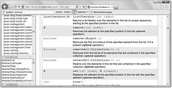
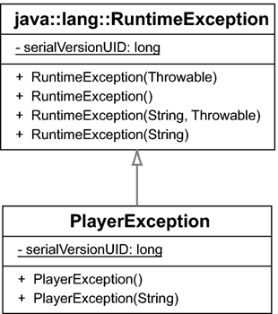

6.5 Auslösen eigener Exceptions
Bisher wurden Exceptions lediglich aufgefangen, aber noch nicht selbst erzeugt. In diesem Abschnitt wollen wir sehen, wie eigene Ausnahmen ausgelöst werden. Das kann zum einen erfolgen, wenn die JVM provoziert wird, etwa bei einer ganzzahligen Division durch 0 oder explizit durch throw.
6.5.1 Mit throw Ausnahmen auslösen
Soll eine Methode oder ein Konstruktor selbst eine Exception auslösen, muss zunächst ein Exception-Objekt erzeugt und dann die Ausnahmebehandlung angestoßen werden. Im Sprachschatz dient das Schlüsselwort throw dazu, eine Ausnahme zu signalisieren und die Abarbeitung an der Stelle zu beenden.
Als Exception-Typ soll im folgenden Beispiel IllegalArgumentException dienen, das ein fehlerhaftes Argument anzeigt:
Listing 6.16: com/tutego/insel/exceptions/v1/Player.java, Konstruktor
Player( int age )
{
if ( age <= 0 )
throw new IllegalArgumentException( "Kein Alter <= 0 erlaubt!" );
this.age = age;
}
Wir sehen im Beispiel, dass negative oder null Alter-Übergaben nicht gestattet sind und zu einem Fehler führen. Im ersten Schritt baut dazu der new-Operator das Exception-Objekt über einen parametrisierten Konstruktor auf. Die Klasse IllegalArgumentException bietet einen solchen Konstruktor, der eine Zeichenkette annimmt, die den näheren Grund der Ausnahme übermittelt. Welche Parameter die einzelnen Exception-Klassen deklarieren, ist der API zu entnehmen. Nach dem Aufbau des Exception-Objekts beendet throw die lokale Abarbeitung, und die JVM sucht ein catch, das die Ausnahme behandelt.
| Hinweis |
|
Ein throws IllegalArgumentException am Konstruktor ist in diesem Beispiel überflüssig, da IllegalArgumentException eine RuntimeException ist, die nicht über ein throws in der Methoden-Signatur angegeben werden muss. |
Lassen wir ein Beispiel folgen, in dem Spieler mit einem negativen Alter initialisiert werden sollen:
Listing 6.17: com/tutego/insel/exceptions/v1/Player.java, main()
try
{
Player d = new Player( –100 );
System.out.println( d );
}
catch ( IllegalArgumentException e )
{
e.printStackTrace();
}
Das führt zu einer Exception, und der Stack-Trace, den printStackTrace() ausgibt, ist:
java.lang.IllegalArgumentException: Kein Alter <= 0 erlaubt!
at com.tutego.insel.exceptions.v1.Player.<init>(Player.java:10)
at com.tutego.insel.exceptions.v1.Player.main(Player.java:19)
| Hinweis |
|
Löst ein Konstruktor eine Ausnahme aus, ist eine Nutzung wie die folgende problematisch: |
|
Player p = null; |
Da die IllegalArgumentException eine RuntimeException ist, hätte es in main() auch ohne try-catch so heißen können:
public static void main( String[] args )
{
Player d = new Player( –100 );
}
Die Runtime-Exception müsste nicht zwingend aufgefangen werden, aber der Effekt wäre, dass die Ausnahme nicht behandelt würde und das Programm abbräche.
class java.lang.IllegalArgumentException |
- IllegalArgumentException()
Erzeugt eine neue Ausnahme ohne genauere Fehlerangabe. - IllegalArgumentException(String s)
Erzeugt ein neues Fehler-Objekt mit einer detaillierteren Fehlerangabe.
6.5.2 Vorhandene Runtime-Fehlertypen kennen und nutzen
Die Java-API bietet eine große Anzahl von Exception-Klassen, und so muss nicht für jeden Fall eine eigene Exception-Klasse deklariert werden. Viele Standard-Fälle, wie falsche Argumente, können durch Standard-Exception-Klassen abgedeckt werden.
| Hinweis |
|
Entwickler sollten nie throw new Exception() oder sogar throw new Throwable() schreiben, sondern sich immer konkreter Unterklassen bedienen. |
Einige Standard-Runtime-Exception-Unterklassen des java.lang-Pakets in der Übersicht:
IllegalArgumentException
Die IllegalArgumentException zeigt an, dass ein Parameter nicht korrekt angegeben ist. Dieser Fehlertyp lässt sich somit nur bei Konstruktoren oder Methoden ausmachen, denen fehlerhafte Argumente übergeben wurden. Oft ist der Grund die Missachtung des Wertebereiches. Wenn die Werte grundsätzlich korrekt sind, darf dieser Fehlertyp nicht ausgelöst werden. Dazu folgen gleich noch ein paar mehr Details.
IllegalStateException
Objekte haben in der Regel Zustände. Gilt es, Operationen auszuführen, aber die Zustände sind nicht korrekt, so kann die Methode eine IllegalStateException auslösen und so anzeigen, dass in dem aktuellen Zustand die Operation nicht möglich ist. Wäre der Zustand korrekt, käme es nicht zu der Ausnahme. Bei statischen Methoden sollte es eine IllegalStateException nicht geben.[151](Im .NET-Framework gibt es eine vergleichbare Ausnahme, die System.InvalidOperationException. In Java trifft der Name allerdings das Problem etwas besser.)
UnsupportedOperationException
Implementieren Klassen Schnittstellen oder realisieren Klassen abstrakte Methoden von Oberklassen, so muss es immer eine Implementierung geben, auch wenn die Unterklasse die Operation eigentlich gar nicht umsetzen kann oder will. Anstatt den Rumpf der Methode nur leer zu lassen und einen potenziellen Aufrufer glauben zu lassen, die Methode führe etwas aus, sollten diese Methoden eine UnsupportedOperationException auslösen. In den API-Dokumentationen werden Methoden, die Unterklassen vielleicht nicht realisieren wollen, als optionale Operationen gekennzeichnet.
Abbildung 6.11: Optionale Operationen in der Schnittstelle java.util.List
Unglücklicherweise gibt es auch eine javax.naming.OperationNotSupportedException. Doch diese sollte nicht verwendet werden. Sie ist speziell für Namensdienste vorgesehen und auch keine RuntimeException.
IndexOutOfBoundsException
Eine IndexOutOfBoundsException löst die JVM automatisch aus, wenn zum Beispiel die Grenzen eines Arrays missachtet werden. Wir können diesen Ausnahmetyp selbst immer dann nutzen, wenn wir Index-Zugriffe haben, etwa auf eine Zeile in einer Datei, und wenn der Index im falschen Bereich liegt. Von IndexOutOfBoundsException gibt es die Unterklassen ArrayIndexOutOfBoundsException und StringIndexOutOfBoundsException. Programmierer werden diese Typen aber in der Regel nicht nutzen. Inkonsistenzen gibt es beim Einsatz von IllegalArgumentException und IndexOutOfBoundsException. Ist etwa der Index falsch, so entscheiden sich einige Autoren für den ersten Fehlertyp, andere für den zweiten. Beides ist prinzipiell gültig. Die IndexOutOfBoundsException ist aber konkreter und zeigt eher ein Implementierungsdetail an.
Keine eigene NullPointerException auslösen
Eine NullPointerException gehört mit zu den häufigsten Ausnahmen. Die JVM löst diesen Fehler etwa bei folgendem Programmstück aus:
String s = null;
s.length(); //NullPointerException
Eine NullPointerException zeigt immer einen Programmierfehler in einem Stück Code an, und so hat es in der Regel keinen Sinn, diesen Fehler abzufragen – der Programmierfehler muss behoben werden. Aus diesem Grund wird eine NullPointerException in der Regel nie explizit vom Programmierer ausgelöst, sondern von der JVM. Sie kann jedoch vom Entwickler bewusst ausgelöst werden, wenn eine zusätzliche Nachricht Klarheit verschaffen soll.
Oft gibt es diese NullPointerException, wenn an Methoden null-Werte übergeben wurden. Hier muss aus der API-Dokumentation klar hervorgehen, ob null als Argument erlaubt ist oder nicht. Wenn nicht, ist es völlig in Ordnung, wenn die Methode eine NullPointerException auslöst, wenn fälschlicherweise doch null übergeben wurde. Auf null zu prüfen, um dann zum Beispiel eine IllegalArgumentException auszulösen, ist eigentlich nicht nötig. Allerdings gilt auch hier, dass IllegalArgumentException allgemeiner und weniger implementierungsspezifisch als eine NullPointerException ist.
| Hinweis |
|
Um eine NullPointerException auszulösen, ist statt throw new NullPointerException(); auch einfach ein throw null; möglich. Doch da eine selbst aufgebaute NullPointerException vermieden werden sollte, ist dieses Idiom nicht wirklich nützlich. |
6.5.3 Parameter testen und gute Fehlermeldungen
Eine IllegalArgumentException ist eine wertvolle Ausnahme, die einen internen Fehler anzeigt: dass nämlich eine Methode mit falschen Argumenten aufgerufen wurde. Eine Methode sollte im Idealfall alle Parameter auf ihren korrekten Wertebereich prüfen und nach dem Fail-fast-Verfahren arbeiten, also so schnell wie möglich einen Fehler melden, anstatt Fehler zu ignorieren oder zu verschleppen. Wenn etwa das Alter einer Person bei setAge() nicht negativ sein kann, ist eine IllegalArgumentException eine gute Wahl. Wenn der Exception-String dann noch aussagekräftig ist, hilft das bei der Behebung des Fehlers ungemein: Der Tipp ist hier, eine aussagekräftige Meldung anzugeben.
| Negativbeispiel |
|
Ist der Wertebereich beim Bilden eines Teilstrings falsch oder ist der Index für System.out.println( "Orakel-Paul".substring( 0, 20 ) ); // N Exception in thread "main" java.lang.StringIndexOutOfBoundsException: System.out.println( "Orakel-Paul".toCharArray()[20] ); // N Exception in thread "main" java.lang.ArrayIndexOutOfBoundsException: 20 |
Da das Testen von Parametern in eine große if-throws-Orgie ausarten kann, ist es eine gute Idee, eine Hilfsklasse mit statischen Methoden wie isNull(), isFalse(), isInRange() einzuführen, die dann eine IllegalArgumentException auslösen, wenn eben der Parameter nicht korrekt ist.[152](Die müssen wir nicht selbst schreiben, da die Open-Source-Landschaft bereits mit der Klasse org.apache.commons.lang.Validate aus den Apache Commons Lang (http://commons.apache.org/ lang/) oder mit com.google.common.base.Preconditions von Google Guava (http://code.google.com/ p/guava-libraries/) schon Vergleichbares bietet; in jedem Fall ist eine gute Parameterprüfung bei öffentlichen Methoden von Bibliotheken ein Muss.)
null-Prüfungen
Für null-Prüfungen führt Java 7 mit Objects.requireNonNull(reference) eine Methode ein, die immer dann eine IllegalArgumentException auslöst, wenn reference == null ist. Optional als zweites Argument lässt sich die Fehlermeldung angeben.
| Tool-Unterstützung |
|
Eine anderer Ansatz sind Prüfungen durch externe Codeprüfungsprogramme. Google zum Beispiel setzt in seinen vielen Java-Bibliotheken auf Parameter-Annotationen wie @Nonnull oder @Nullable.[153](Sie wurden in JSR-305, »Annotations for Software Defect Detection«, definiert. Java 7 sollte dies ursprünglich unterstützen, doch das wurde gestrichen.) Statische Analysetools wie FindBugs (http://findbugs.sourceforge.net/) testen dann, ob es Fälle geben kann, in denen die Methode mit null aufgerufen wird. Zur Laufzeit findet der Test jedoch nicht statt. |
6.5.4 Neue Exception-Klassen deklarieren
Eigene Exceptions sind immer direkte (oder indirekte) Unterklassen von Exception (sie können auch Unterklassen von Throwable sein, aber das ist unüblich). Eigene Exception-Klassen bieten in der Regel zwei Konstruktoren: einen Standard-Konstruktor und einen mit einem String parametrisierten Konstruktor, um eine Fehlermeldung (die Exception-Message) anzunehmen und zu speichern.
Um für die Klasse Player im letzten Beispiel einen neuen Fehlertyp zu deklarieren, erweitern wir RuntimeException zur PlayerException:
Abbildung 6.12: UML-Diagramm für PlayerException
Listing 6.18: com/tutego/insel/exception/v2/PlayerException.java
package com.tutego.insel.exception.v2;
public class PlayerException extends RuntimeException
{
public PlayerException()
{
}
public PlayerException( String s )
{
super( s );
}
}
Nehmen wir uns die Initialisierung mit dem Alter noch einmal vor. Statt der IllegalArgumentException löst der Konstruktor im Fehlerfall unsere speziellere PlayerException aus:
Listing 6.19: com/tutego/insel/exception/v2/Player.java, Ausschnitt
if ( age <= 0 )
throw new PlayerException( "Kein Alter <= 0 erlaubt!" );
Im Hauptprogramm können wir auf die PlayerException reagieren, indem wir die Ausnahme explizit mit try-catch auffangen oder an den Aufrufer weitergeben – unsere Exception ist ja eine RuntimeException und müsste nicht direkt abgefangen werden:
Exception in thread "main" com.tutego.insel.exceptions.v2.PlayerException: Kein Alter <= 0 erlaubt!
at com.tutego.insel.exceptions.v2.Player.<init>(Player.java:10)
at com.tutego.insel.exceptions.v2.Player.main(Player.java:19)
| Tipp |
|
Es ist immer eine gute Idee, Unterklassen von Exception zu bauen. Würden wir keine Unterklassen anlegen, sondern direkt mit throw new Exception() einen Fehler anzeigen, so könnten wir unseren Fehler später nicht mehr von anderen Fehlern unterscheiden. Mit der Hierarchiebildung wird nämlich die Spezialisierung bei mehreren catch-Anweisungen sowie eine Unterscheidung mit instanceof unterstützt. Wir müssen immer unseren Fehler mit catch(Exception e) auffangen und bekommen so alle anderen Fehler mit aufgefangen, die dann nicht mehr unterschieden werden können. Allerdings sollten Entwickler nicht zu inflationär mit den Ausnahmen-Hierarchien umgehen; in vielen Fällen reicht eine Standard-Ausnahme aus. |
6.5.5 Eigene Ausnahmen als Unterklassen von Exception oder RuntimeException?
Java steht mit der Ausnahmebehandlung über Exceptions nicht allein. Alle modernen Programmiersprachen verfügen über diese Sprachmittel. Allerdings gibt es eine Sache, die Java besonders macht: Die Unterscheidung zwischen geprüften und ungeprüften Ausnahmen. Daher stellt sich beim Design von eigenen Ausnahmenklassen die Frage, ob sie eine Unterklasse von RuntimeException sein sollen oder nicht. Einige Entscheidungshilfen:
- Betrachten wir, wie die Java-API geprüfte und ungeprüfte Ausnahmen einsetzt. Die ungeprüften Ausnahmen signalisieren Programmierfehler, die es zu beheben gilt. Ein gutes Beispiel ist eine NullPointerException, ClassCastException oder ArrayIndexOutOfBoundException. Es steht außer Frage, dass Fehler dieser Art Programmierfehler sind und behoben werden müssen. Ein catch wäre unnötig, da die Fehler ja im korrekten Code gar nicht auftreten können. Anders ist es bei geprüften Ausnahmen. Die Ausnahmen zeigen Fehler an, die unter gewissen Umständen einfach auftreten können. Eine IOException ist nicht schlimmer, denn die Datei kann nun einmal nicht vorhanden sein. Wir sollten uns bei dieser Unterscheidung aber bewusst sein, dass die JVM die Fehler von sich aus auslöst und nicht eine Methode.
- Soll sich die Anwendung von dem Fehler »erholen« können oder nicht? Kommt es wegen einer RuntimeException zu einem Programmfehler, dann sollte die Anwendung zwar nicht »abstürzen«, allerdings ist ein sinnvolles Weiterarbeiten kaum möglich. Bei geprüften Ausnahmen ist das anders. Sie signalisieren, dass der Fehler behoben und das Programm dann normal fortgesetzt werden kann.
- Ein Modul kann intern mit RuntimeExceptions arbeiten, und der API-Designer auf der anderen Seite, der Schnittstellen zu Systemen modelliert, kann gut auf geprüfte Ausnahmen zurückgreifen. Das ist einer der Gründe, warum moderne Frameworks wie EJB 3 oder auch Spring fast ausschließlich auf eine RuntimeException setzen: Wenn es einen Fehler gibt, dann lässt sich schwer etwas behandeln und einfach korrigieren. Zeigt etwa ein internes Modul beim Datenbankzugriff einen Fehler an, muss die ganze Operation abgebrochen werden, und nichts ist zu retten. Hier gilt im Großen, was auch bei der NullPointerException im Kleinen passiert: Der Fehler ist ein echtes Problem, und das Programm kann nicht einfach fortgeführt werden.
- Geprüfte Ausnahmen können melden, wenn sich der Aufrufer nicht an die Vereinbarung der Methode hält. Die FileNotFoundException ist so ein Beispiel. Hätte das Programm mit der File-Methode exits() vorher nach der Existenz der Datei gefragt, wäre uns diese Ausnahme erspart geblieben. Der Aufrufer ist sozusagen selbst schuld, dass er eine geprüfte Ausnahme bekommt, da er die Rahmenbedingungen nicht einhält. Bei einer ungeprüften Ausnahme ist nicht der Aufrufer an dem Problem schuld, sondern ein Programmierfehler. Da geprüfte Ausnahmen in der Java-Dokumentation auftauchen, ist dem Entwickler klar, was passieren wird, wenn er die Vorbedingungen der Methode nicht einhält. Nach dieser Philosophie müsste eigentlich die NumberFormatException eine geprüfte Ausnahme sein, die Integer.parseInt() auslöst. Denn der Entwickler hat ja die parseInt() mit einem falschen Wert gefüttert, also den Methodenvertrag verletzt. Eine geprüfte Ausnahme wäre nach dieser Philosophie richtig. Auf der anderen Seite lässt sich argumentieren, dass das Missachten von korrekten Parametern ein interner Fehler ist, denn es ist Aufgabe des Aufrufers, das sicherzustellen, und so kann die parseInt() mit einer RuntimeException aussteigen.
- Die Unterscheidung zwischen internen Fehlern und externen Fehlern erlaubt eine Einteilung in geprüfte und ungeprüfte Ausnahmen. Die Programmierfehler mit Ausnahmen (wie NullPointerException oder ClassCastException) lassen sich vermeiden, da wir als Programmierer unseren Quellcode kontrollieren können und die Programmfehler entfernen können. Doch bei externen Fehlern haben wir als Entwickler keine Chance. Das Netzwerk kann plötzlich zusammenbrechen und uns eine SocketException und IOException bescheren. Alles das liegt nicht in unserer Hand und kann auch durch noch so sorgsame Programmierung nicht verhindert werden. Das schwächt natürlich das Argument aus dem letzten Aufzählungspunkt ab: Es lässt sich zwar abfragen, ob eine Datei vorhanden ist, um eine FileNotFoundException abzuwehren, doch wenn die Festplatte plötzlich Feuer fängt, ist uns eine IOException gewiss, denn Java-Programme sind nicht wie folgt aufgebaut: »Frage, ob die Festplatte bereit ist, und dann lies.« Wenn der Fehler also nicht innerhalb des Programms liegt, sondern außerhalb, lassen sich geprüfte Ausnahmen verwenden.
- Bei geprüften Ausnahmen in Methodensignaturen muss sich der Nutzer auf eine bestimmte API einstellen. Eine spätere Änderung des Ausnahmetyps ist problematisch, da alle catch-Anweisungen beziehungsweise throws-Klauseln abgeändert werden müssen. RuntimeExcpetions sind hier flexibler. Werden Programme sehr agil entworfen und ändert sich der Ausnahmetyp im Lebenslauf einer Software öfter, kann das zu vielen Änderungen führen, die natürlich Zeit und somit Geld kosten.
Der erste Punkt führt in der Java-API zu einigen Entscheidungen, die Entwickler quälen, aber nur konsistent sind, etwa die InterruptedException. Jedes Thread.sleep() zum Schlafenlegen eines Threads muss eine InterruptedException auffangen. Sie kann auftreten, wenn ein Thread von außen einen Interrupt sendet. Da das auf keinen Fall einen Fehler darstellt, ist InterruptedException eine geprüfte Ausnahme, auch wenn wir dies oft als lästig empfinden und selten auf die InterruptedException reagieren müssen. Bei einem Aufbau einer URL ist die MalformedURLException ebenfalls lästig, aber stammt die Eingabe aus einer Dialogbox, kann das Protokoll einfach falsch sein.[154](Luxuriös wäre eine Prüfung zur Compilierzeit, denn wenn etwa new URL("http://tutego.de") im Code steht, so kann es die Ausnahme nicht geben. Doch von nötigen try-catch-Blöcken, je nachdem, was der Compiler statisch entscheiden kann, sind wir weit entfernt.)
Geprüfte Ausnahmen sind vielen Entwicklern lästig, was zu einem Problem führt, wenn die Ausnahmen einfach aufgefangen werden, aber nichts passiert – etwa mit einem leeren catch-Block. Der Fehler sollte aber vielleicht nach oben laufen. Das Problem besteht bei einer RuntimeException seltener, da sie in der Regel an der richtigen zentralen Stelle behandelt wird.
Wenn wir die Punkte genauer betrachten, dann wird schnell eine andere Tatsache klar, sodass heute eine große Unsicherheit über die richtige Exception-Basisklasse besteht. Zwar zwingt uns der Compiler, eine geprüfte Exception zu behandeln, aber nichts spricht dagegen, das bei einer ungeprüften Ausnahme ebenfalls zu tun. Integer.parseInt() und NumberFormatException sind ein gutes Beispiel: Der Compiler zwingt uns nicht zu einem Test, wir machen ihn aber trotzdem. Sind Entwickler konsequent und prüfen sie Ausnahmen selbstständig, braucht der Compiler den Test prinzipiell nicht zu machen. Daher folgen einige Entwickler einer radikalen Strategie und entwerfen alle Ausnahmen als RuntimeException. Die Unterscheidung, ob sich eine Anwendung dann »erholen« soll oder nicht, liegt beim Betrachter und ist nur noch reine Konvention. Mit dieser Alles-ist-ungeprüft-Version würde dann Java gleichauf mit C#, C++, Python, Groovy, ... liegen.[155](Doch eines ist sicher: Java-Vater James Gosling ist dagegen: http://www.artima.com/intv/solid.html.)
6.5.6 Ausnahmen abfangen und weiterleiten *
Die Ausnahme, die ein catch-Block auffängt, kann mit einem throw wieder neu ausgelöst werden – das nennt sich rethrow. Ein Beispiel soll die Arbeitsweise verdeutlichen. Eine Hilfsmethode createUriFromHost() setzt vor einen Hostnamen "http://" und liefert das Ergebnis als URI-Objekt zurück. createUriFromHost("tutego.de") liefert somit eine URI mit http://tutego.de. Ist der Hostname aber falsch, löst der Konstruktor der URI-Klasse eine Ausnahme aus.
Listing 6.20: Rethrow.java
import java.net.*;
public class Rethrow
{
public static URI createUriFromHost( String host ) throws URISyntaxException
{
try
{
return new URI( "http://" + host );
}
catch ( URISyntaxException e )
{
System.err.println( "Hilfe! " + e.getMessage() );
throw e;
}
}
public static void main( String[] args )
{
try
{
createUriFromHost( "tutego.de" );
createUriFromHost( "%" );
}
catch ( URISyntaxException e )
{
e.printStackTrace();
}
}
}
Die Klasse URI testet die Strings genauer als die URL-Klasse, sodass wir in diesem Beispiel URI nutzen. Die Ausnahmen im Fehlerfall sind auch etwas anders; URISyntaxException ist die Ausnahme bei URI; MalformedURLException ist die Ausnahme bei URL. Genau diesen Fehler provozieren wir, indem wir dem Konstruktor ein "http://#" übergeben, was eine offensichtlich falsche URI ist. Unsere Methode wird die URISyntaxException auffangen, den Fehler auf der Standardfehlerausgabe melden und dann weiterleiten, denn wirklich behandeln kann unsere Methode das Problem nicht; sie kann nur melden, was ein Vorteil ist, wenn der Aufrufer dies nicht tut.
Die Programmausgabe ist:
Hilfe! Malformed escape pair at index 7: http://%
java.net.URISyntaxException: Malformed escape pair at index 7: http://%
at java.net.URI$Parser.fail(URI.java:2827)
at java.net.URI$Parser.scanEscape(URI.java:2957)
at java.net.URI$Parser.scan(URI.java:2980)
at java.net.URI$Parser.parseAuthority(URI.java:3121)
at java.net.URI$Parser.parseHierarchical(URI.java:3076)
at java.net.URI$Parser.parse(URI.java:3032)
at java.net.URI.<init>(URI.java:595)
at Rethrow.createUriFromHost(Rethrow.java:9)
at Rethrow.main(Rethrow.java:24)
6.5.7 Aufrufstack von Ausnahmen verändern *
Wenn wir in einer Ausnahmebehandlung eine Exception e auffangen und genau diese dann mit throw e weiterleiten, müssen wir uns bewusst sein, dass die Ausnahme e auch den Aufrufstack weitergibt. Aus dem vorangehenden Beispiel:
java.net.URISyntaxException: Malformed escape pair at index 7: http://%
at java.net.URI$Parser.fail(URI.java:2827)
at java.net.URI$Parser.scanEscape(URI.java:2957)
...
at java.net.URI.<init>(URI.java:595)
at Rethrow.createUriFromHost(Rethrow.java:9)
at Rethrow.main(Rethrow.java:24)
Die main()-Methode fängt den Fehler von createUriFromHost() ab, aber diese Methode steht nicht ganz oben im Aufrufstack. Die Ausnahme stammte ja gar nicht von createUriFromHost() selbst, sondern von fail(), sodass fail() oben steht. Ist das nicht gewünscht, kann es korrigiert werden, denn die Basisklasse für alle Ausnahmen Throwable bietet die Methode fillInStackTrace(), mit der sich der Aufrufstack neu füllen lässt. Unsere bekannte Methode createUriFromHost() soll auf fillInStackTrace() zurückgreifen:
Listing 6.21: RethrowWithFillInStackTrace.java, createUriFromHost()
public static URI createUriFromHost( String host ) throws URISyntaxException
{
try
{
return new URI( "http://" + host );
}
catch ( URISyntaxException e )
{
System.err.println( "Hilfe! " + e.getMessage() );
e.fillInStackTrace();
throw e;
}
}
Kommt es in createUriFromHost() zur URISyntaxException, so fängt unsere Methode diese ab. Ursprünglich ist in e der Aufrufstack mit der fail()-Methode ganz oben gespeichert, allerdings löscht fillInStackTrace() zunächst den ganzen Stracktrace und füllt ihn neu mit dem Pfad, den der aktuelle Thread zu der Methode führt, die fillInStackTrace() aufruft – das ist createUriFromHost(). Daher beginnt die Konsolenausgabe auch mit unserer Methode:
Hilfe! Malformed escape pair at index 7: http://%
java.net.URISyntaxException: Malformed escape pair at index 7: http://%
at RethrowWithFillInStackTrace.createUriFromHost(RethrowWithFillInStackTrace.java:14)
at RethrowWithFillInStackTrace.main(RethrowWithFillInStackTrace.java:24)
6.5.8 Präzises rethrow *
Die Notwendigkeit, Ausnahmen über einen Basistyp zu fangen, ist mit dem Einzug vom multi-catch gesunken. Doch für gewisse Programmteile ist es immer noch praktisch, alle Fehler eines gewissen Typs aufzufangen. Wir können auch so weit in der Ausnahmehierarchie nach oben laufen, um alle Fehler aufzufangen – dann haben wir es mit einem try { ... } catch(Throwable t){ ... } zu tun. Ein multi-catch ist für geprüfte Ausnahmen besonders gut, aber bei ungeprüften Ausnahmen ist eben nicht immer klar, was als Fehler denn so ausgelöst wird, und ein catch(Throwable t) hat den Vorteil, dass es alles wegfischt.
Problemstellung
Werden Ausnahmen über einen Basistyp gefangen und wird diese Ausnahme mit throw weitergeleitet, dann ist es naheliegend, dass der aufgefangene Typ genau der Typ ist, der auch bei throws in der Methodensignatur stehen muss.
Stellen wir uns vor, ein Programmblock nimmt einen Screenshot und speichert ihn in einer Datei. Kommt es beim Abspeichern zu einem Fehler, soll das, was vielleicht schon in die Datei geschrieben wurde, gelöscht werden; die Regel ist also: Entweder steht der Screenshot komplett in der Datei oder es gibt gar keine Datei. Die Methode kann so aussehen, wobei die Ausnahmen an den Aufrufer weitergegeben werden sollen:
public static void saveScreenshot( String filename )
throws AWTException, IOException
{
try
{
Rectangle r = new Rectangle( Toolkit.getDefaultToolkit().getScreenSize() );
BufferedImage screenshot = new Robot().createScreenCapture( r );
ImageIO.write( screenshot, "png", new File( filename ) );
}
catch ( AWTException e )
{
throw e;
}
catch ( IOException e )
{
new File( filename ).delete();
throw e;
}
}
Mit den beiden catch-Blöcken sind wir genau auf die Ausnahmen eingegangen, die createScreenCapture() und write() auslösen. Das ist richtig, aber löschen wir wirklich immer die Dateireste, wenn es Probleme beim Schreiben gibt? Richtig ist, dass wir immer dann die Datei löschen, wenn es zu einer IOException kommt. Aber was passiert, wenn die Implementierung eine RuntimeException auslöst? Dann wird die Datei nicht gelöscht, aber das ist gefragt! Das scheint einfach gefixt, denn statt
catch ( IOException e )
{
new File( filename ).delete();
throw e;
}
schreiben wir:
catch ( Throwable e )
{
new File( filename ).delete();
throw e;
}
Doch können wir das Problem so lösen? Der Typ Throwable passt doch gar nicht mehr mit dem deklarierten Typ IOException in der Methodensignatur zusammen:
public static void saveScreenshot( String filename )
throws AWTException /*1*/, IOException /*2*/
{
...
catch ( AWTException /*1*/ e )
{
throw e;
}
catch ( Throwable /*?*/ e )
{
new File( filename ).delete();
throw e;
}
}
Die erste catch-Klausel fängt AWTException und leitet es weiter. Damit wird saveScreenshot() zum möglichen Auslöser von AWTException und die Ausnahme muss mit throws an die Signatur. Wenn nun ein catch-Block jedes Throwable auffängt und diesen Throwable-Fehler weiterleitet, ist zu erwarten, dass an der Signatur auch Throwable stehen muss und IOException nicht reicht. Das war auch bis Java 6 so, aber in Java 7 kam eine Anpassung.
Neu seit Java 7: eine präzisere Typprüfung
In Java 7 hat der Compiler eine kleine Veränderung erfahren, von einer unpräziseren zu einer präziseren Typanalyse: Immer dann, wenn in einem catch-Block ein throw stattfindet, ermittelt der Compiler die im try-Block tatsächlich aufgetretenen geprüften Exception-Typen und schenkt dem im catch genannten Typ für das rethrow im Prinzip keine Beachtung. Statt dem gefangenen Typ wird der Compiler den durch die Codeanalyse gefundenen Typ beim rethrow melden.
Der Compiler erlaubt nur dann das präzise rethrow, wenn die catch-Variable nicht verändert wird. Zwar ist eine Veränderung einer nicht-finalen catch-Variablen wie auch unter Java 1.0 erlaubt, doch wenn die Variable belegt wird, schaltet der Compiler von der präzisen in die unpräzise Erkennung zurück. Führen wir etwa die folgende Zuweisung ein, so funktioniert das Ganze schon nicht mehr:
catch ( Throwable e )
{
new File( filename ).delete();
e = new IllegalStateException();
throw e;
}
Die Zuweisung führt zu dem Compilerhinweis, dass jetzt auch Throwable mit in die throws-Klausel muss.
| Stilfrage |
|
Die catch-Variable kann für die präzisere Typprüfung den Modifizierer final tragen, muss das aber nicht tun. Immer dann, wenn es keine Veränderung an der Variablen gibt, wird der Compiler sie als final betrachten und eine präzisere Typprüfung durchführen – daher nennt sich das auch effektiv final. Die Java Language Specification rät vom final-Modifizierer aus Stilgründen ab. Ab Java 7 ist es das Standardverhalten, und daher ist es Quatsch, überall ein final dazuzuschreiben, um die präzisere Typprüfung zu dokumentieren. |
| Migrationsdetail |
|
Da der Compiler nun mehr Typwissen hat, stellt sich die Frage, ob alter Programmode mit dem neuen präziseren Verhalten vielleicht ungültig werden könnte. Theoretisch ist das möglich, aber die Sprachdesigner haben in über 9 Millionen Zeilen Code[156](Die Zahl stammt aus der FOSDEM 2011-Präsentation »Project Coin: Language Evolution in the Open«.) von |
|
unterschiedlichen Projekten keine Probleme gefunden. Prinzipiell könnte der Compiler jetzt unerreichbaren Code finden, der vorher versteckt blieb. Ein kleines Beispiel, was vor Java 7 compiliert, aber ab Java 7 nicht mehr: try |
6.5.9 Geschachtelte Ausnahmen *
Der Grund für eine Ausnahme mag der sein, dass ein eingebetteter Teil versagt. Das ist vergleichbar mit einer Transaktion: Ist ein Teil der Kette fehlerhaft, so ist der ganze Teil nicht ausführbar. Bei Ausnahmen ist das nicht anders. Nehmen wir an, wir haben eine Methode foo(), die im Falle eines Misslingens eine Ausnahme HellException auslöst. Ruft unsere Methode foo() nun ein Unterprogramm bar() auf, das zum Beispiel eine Ein-/ Ausgabeoperation tätigt, und das geht schief, wird die IOException der Anlass für unsere HellException sein. Es liegt also nahe, bei der Nennung des Grunds für das eigene Versagen das Misslingen der Unteraufgabe zu nennen (wieder ein Beweis dafür, wie »menschlich« Programmieren sein kann).
Eine geschachtelte Ausnahme (engl. nested exception) speichert einen Verweis auf eine weitere Ausnahme. Wenn ein Exception-Objekt aufgebaut wird, lässt sich der Grund (engl. cause) als Argument im Konstruktor der Throwable-Klasse übergeben. Die Ausnahme-Basisklasse bietet dafür zwei Konstruktoren:
- Throwable(Throwable cause)
- Throwable(String message, Throwable cause)
Der Grund kann über die Methode Throwable getCause() erfragt werden.
Da Konstruktoren in Java nicht vererbt werden, bieten die Unterklassen oft Konstruktoren an, um den Grund anzunehmen: Zumindest Exception macht das und kommt somit auf vier Erzeuger:
- Exception()
- Exception(String message)
- Exception(String message, Throwable cause)
- Exception(Throwable cause)
Einige der tiefer liegenden Unterklassen haben dann auch diese Konstruktor-Typen mit Throwable-Parameter, wie IOException, SQLException oder ClassNotFoundException, andere wiederum nicht, wie PrinterException. Eigene Unterklassen können auch mit initCause() genau einmal eine geschachtelte Ausnahme angeben.
Geprüfte Ausnahmen in ungeprüfte Ausnahmen verpacken
In modernen Frameworks ist die Nutzung von Ausnahmen, die nicht geprüft werden müssen, also Exemplare von RuntimeException sind, häufiger geworden. Bekannte zu prüfende Ausnahmen werden in RuntimeException-Objekte verpackt (eine Art Exception-Wrapper), die den Verweis auf die auslösende Nicht-RuntimeException speichern.
Dazu ein Beispiel. Die folgenden drei Zeilen ermitteln, ob die Web-Seite zu einer URL verfügbar ist:
HttpURLConnection.setFollowRedirects( false );
HttpURLConnection con = (HttpURLConnection)(new URL( url ).openConnection());
boolean available = con.getResponseCode() == HttpURLConnection.HTTP_OK;
Da der Konstruktor von URL eine MalformedURLException auslösen kann und es beim Netzwerkzugriff zu einer IOException kommen kann, müssen diese beiden Ausnahmen entweder behandelt oder an den Aufrufer weitergereicht werden. Wir wollen eine Variante wählen, in der wir die geprüften Ausnahmen in eine RuntimeException hüllen, sodass es eine Utility-Methode gibt und sich der Aufrufer nicht lange mit irgendwelchen Ausnahmen beschäftigen muss:
Listing 6.22: NestedException.java, NestedException
public static boolean isAvailable( String url )
{
try
{
HttpURLConnection.setFollowRedirects( false );
HttpURLConnection con = (HttpURLConnection)(new URL( url ).openConnection());
return con.getResponseCode() == HttpURLConnection.HTTP_OK;
}
catch ( MalformedURLException e )
{
throw new RuntimeException( e );
}
catch ( IOException e )
{
throw new RuntimeException( e );
}
}
public static void main( String[] args )
{
System.out.println( isAvailable( "http://laber.rabar.ber/" ) ); // false
System.out.println( isAvailable( "http://www.tutego.de/" ) ); // true
System.out.println( isAvailable( "taube://sonsbeck/schlossstrasse/5/" ) ); // N
}
In der letzten Zeile kommt es zu einer Ausnahme, da es das Protokoll »taube« nicht gibt. Die Ausgabe ist folgende:
false
true
Exception in thread "main" java.lang.RuntimeException:
java.net.MalformedURLException: unknown protocol: taube
at NestedException.isAvailable(NestedException.java:25)
at NestedException.main(NestedException.java:12)
Caused by: java.net.MalformedURLException: unknown protocol: taube
at java.net.URL.<init>(URL.java:590)
at java.net.URL.<init>(URL.java:480)
at java.net.URL.<init>(URL.java:429)
at NestedException.isAvailable(NestedException.java:20)
... 1 more
In der Praxis wird es bei großen Stack-Traces – und einem Szenario, bei dem abgefangen, verpackt wird – fast unmöglich, aus der Ausgabe den Verlauf zu entschlüsseln, da sich diverse Teile wiederholen und dann wieder abgekürzt werden. Die duplizierten Teile sind zur Verdeutlichung fett hervorgehoben.
Ihr Kommentar
Wie hat Ihnen das <openbook> gefallen? Wir freuen uns immer über Ihre freundlichen und kritischen Rückmeldungen.
 Jetzt bestellen
Jetzt bestellen


{kind=link}
{kind=link}